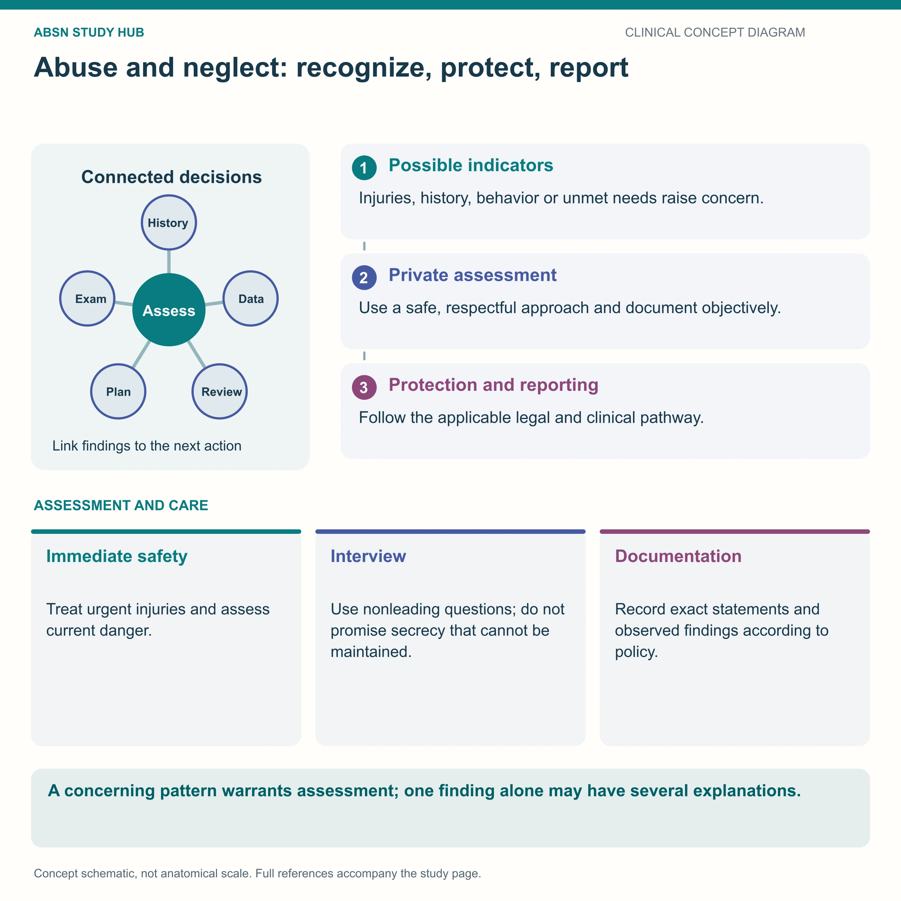

What raises suspicion, how to document it, and why suspicion alone is enough.

Where the bruise is matters more than what it looks like. TEN-4: torso, ears, neck in a child under four.
The single most important indicator is a history that does not fit the injury — or a history that changes between tellings.
| Category | Concerning findings |
|---|---|
| Bruising | On torso, ears or neck in a child under 4; any bruise in a baby not yet cruising; patterned marks — belt, hand, cord |
| Burns | Stocking or glove distribution; sharp waterline edges; cigarette-sized circles; symmetrical burns |
| Fractures | Spiral fracture in a non-walking child; fractures at different stages of healing; rib, femur or humerus in an infant |
| Head | Retinal hemorrhages; subdural bleed with no adequate explanation |
| Behavior | Watchfulness, flinching, indiscriminate affection, or no distress at painful procedures |
| Context | Delay in seeking care; blaming a sibling or the child; inconsistent accounts |
Often the more common and more easily missed form: failure to thrive, poor hygiene, untreated dental decay, missed appointments and immunizations, inappropriate clothing, unsupervised young children.
An infant with unexplained irritability, vomiting, poor feeding, a bulging fontanelle, seizures or reduced consciousness and no clear history needs abusive head trauma considered.
Prevention teaching: normalize that infant crying peaks around 6–8 weeks, and that it is always safe to put the baby down in the crib and walk away for a few minutes.
These newly drawn concept diagrams consolidate the retired illustration sets. The accompanying study notes and original handout links remain on this page.